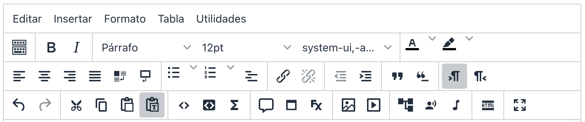
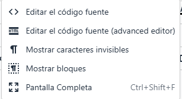

2
The text editor of eXeLearning is TinyMCE, a WYSIWYG editor (What you see is what you get.This editor is the fundamental interface for introducing and editing text content within most iDevices.
It offers a Main menu with additional features (Editing, Insert, Format, Table, Utilities) and Three rows of tools with various options that you can see the following image passing the mouse through the active areas of the same.
{"typeGame": "Mapa", "instructions": "", "showMinimize": false, "showActiveAreas": false, "author": "", "url": "../content/resources/20251025072413XBDNIN/Captura_de_Pantalla_2025-08-27_a_las_14.41.40.png", "authorImage": "", "altImage": "", "itinerary": {"showClue": false, "clueGame": "", "percentageClue": 40, "showCodeAccess": false, "codeAccess": "", "messageCodeAccess": ""}, "points": [{"id": "p442252955567", "title": "Activate/deactivate the toolbar", "type": 2, "url": "", "video": "", "x": 0.0125, "y": 0.2874251497005988, "x1": 0.0525, "y1": 0.47904191616766467, "footer": "", "author": "", "alt": "", "iVideo": 0, "fVideo": 0, "eText": "", "iconType": 1, "question": "", "question_audio": "", "toolTip": "", "link": "", "color": "#000000", "fontSize": "14", "map": {"id": "a442252955567", "pts": [{"id": "p811205801791", "title": "", "type": 0, "url": "", "video": "", "x": 0, "y": 0, "x1": 0, "y1": 0, "footer": "", "author": "", "alt": "", "iVideo": 0, "fVideo": 0, "eText": "", "iconType": 0, "question": "", "question_audio": "", "toolTip": "", "link": "", "color": "#000000", "fontSize": "14", "map": {"id": "a811205801791", "url": "", "alt": "", "author": "", "pts": []}, "slides": [{"id": "s811205801791", "title": "", "url": "", "author": "", "alt": "", "footer": ""}], "activeSlide": 0}], "url": "", "alt": "", "author": "", "active": 0}, "slides": [{"id": "s442252955567", "title": "", "url": "", "author": "", "alt": "", "footer": ""}], "activeSlide": 0, "audio": ""}, {"id": "p1751401326287", "title": "Editing", "type": 0, "url": "../content/resources/20251025072413XBDNIN/Editar.PNG", "video": "", "x": 0.01125, "y": 0.08982035928143713, "x1": 0.07625, "y1": 0.2215568862275449, "footer": "", "author": "", "alt": "Menu to edit", "iVideo": 0, "fVideo": 0, "eText": "", "iconType": 1, "question": "", "question_audio": "", "toolTip": "", "link": "", "color": "#000000", "fontSize": "14", "map": {"id": "a1751401326287", "pts": [{"id": "p417488966815", "title": "", "type": 0, "url": "", "video": "", "x": 0, "y": 0, "x1": 0, "y1": 0, "footer": "", "author": "", "alt": "", "iVideo": 0, "fVideo": 0, "eText": "", "iconType": 0, "question": "", "question_audio": "", "toolTip": "", "link": "", "color": "#000000", "fontSize": "14", "map": {"id": "a417488966815", "url": "", "alt": "", "author": "", "pts": []}, "slides": [{"id": "s417488966815", "title": "", "url": "", "author": "", "alt": "", "footer": ""}], "activeSlide": 0}], "url": "", "alt": "", "author": "", "active": 0}, "slides": [{"id": "s1751401326287", "title": "", "url": "", "author": "", "alt": "", "footer": ""}], "activeSlide": 0, "audio": ""}, {"id": "p555861907876", "title": "Inserted", "type": 0, "url": "../content/resources/20251025072413XBDNIN/Insertar.PNG", "video": "", "x": 0.08, "y": 0.09580838323353294, "x1": 0.16375, "y1": 0.23353293413173654, "footer": "", "author": "", "alt": "", "iVideo": 0, "fVideo": 0, "eText": "", "iconType": 1, "question": "", "question_audio": "", "toolTip": "", "link": "", "color": "#000000", "fontSize": "14", "map": {"id": "a555861907876", "pts": [{"id": "p448237451321", "title": "", "type": 0, "url": "", "video": "", "x": 0, "y": 0, "x1": 0, "y1": 0, "footer": "", "author": "", "alt": "", "iVideo": 0, "fVideo": 0, "eText": "", "iconType": 0, "question": "", "question_audio": "", "toolTip": "", "link": "", "color": "#000000", "fontSize": "14", "map": {"id": "a448237451321", "url": "", "alt": "", "author": "", "pts": []}, "slides": [{"id": "s448237451321", "title": "", "url": "", "author": "", "alt": "", "footer": ""}], "activeSlide": 0}], "url": "", "alt": "", "author": "", "active": 0}, "slides": [{"id": "s555861907876", "title": "", "url": "", "author": "", "alt": "", "footer": ""}], "activeSlide": 0, "audio": ""}, {"id": "p949266110817", "title": "formats", "type": 0, "url": "../content/resources/20251025072413XBDNIN/Formato.PNG", "video": "", "x": 0.16625, "y": 0.09580838323353294, "x1": 0.25625, "y1": 0.2275449101796407, "footer": "", "author": "", "alt": "", "iVideo": 0, "fVideo": 0, "eText": "", "iconType": 1, "question": "", "question_audio": "", "toolTip": "", "link": "", "color": "#000000", "fontSize": "14", "map": {"id": "a949266110817", "pts": [{"id": "p1152276621694", "title": "", "type": 0, "url": "", "video": "", "x": 0, "y": 0, "x1": 0, "y1": 0, "footer": "", "author": "", "alt": "", "iVideo": 0, "fVideo": 0, "eText": "", "iconType": 0, "question": "", "question_audio": "", "toolTip": "", "link": "", "color": "#000000", "fontSize": "14", "map": {"id": "a1152276621694", "url": "", "alt": "", "author": "", "pts": []}, "slides": [{"id": "s1152276621694", "title": "", "url": "", "author": "", "alt": "", "footer": ""}], "activeSlide": 0}], "url": "", "alt": "", "author": "", "active": 0}, "slides": [{"id": "s949266110817", "title": "", "url": "", "author": "", "alt": "", "footer": ""}], "activeSlide": 0, "audio": ""}, {"id": "p313108127234", "title": "Table of", "type": 0, "url": "../content/resources/20251025072413XBDNIN/Tabla.PNG", "video": "", "x": 0.25875, "y": 0.08383233532934131, "x1": 0.32625, "y1": 0.2215568862275449, "footer": "", "author": "", "alt": "", "iVideo": 0, "fVideo": 0, "eText": "", "iconType": 1, "question": "", "question_audio": "", "toolTip": "", "link": "", "color": "#000000", "fontSize": "14", "map": {"id": "a313108127234", "pts": [{"id": "p897702809777", "title": "", "type": 0, "url": "", "video": "", "x": 0, "y": 0, "x1": 0, "y1": 0, "footer": "", "author": "", "alt": "", "iVideo": 0, "fVideo": 0, "eText": "", "iconType": 0, "question": "", "question_audio": "", "toolTip": "", "link": "", "color": "#000000", "fontSize": "14", "map": {"id": "a897702809777", "url": "", "alt": "", "author": "", "pts": []}, "slides": [{"id": "s897702809777", "title": "", "url": "", "author": "", "alt": "", "footer": ""}], "activeSlide": 0}], "url": "", "alt": "", "author": "", "active": 0}, "slides": [{"id": "s313108127234", "title": "", "url": "", "author": "", "alt": "", "footer": ""}], "activeSlide": 0, "audio": ""}, {"id": "p719404453665", "title": "Utilities", "type": 0, "url": "../content/resources/20251025072413XBDNIN/Utilidades.PNG", "video": "", "x": 0.32375, "y": 0.08383233532934131, "x1": 0.43, "y1": 0.20958083832335328, "footer": "", "author": "", "alt": "", "iVideo": 0, "fVideo": 0, "eText": "", "iconType": 1, "question": "", "question_audio": "", "toolTip": "", "link": "", "color": "#000000", "fontSize": "14", "map": {"id": "a719404453665", "pts": [{"id": "p1105958727411", "title": "", "type": 0, "url": "", "video": "", "x": 0, "y": 0, "x1": 0, "y1": 0, "footer": "", "author": "", "alt": "", "iVideo": 0, "fVideo": 0, "eText": "", "iconType": 0, "question": "", "question_audio": "", "toolTip": "", "link": "", "color": "#000000", "fontSize": "14", "map": {"id": "a1105958727411", "url": "", "alt": "", "author": "", "pts": []}, "slides": [{"id": "s1105958727411", "title": "", "url": "", "author": "", "alt": "", "footer": ""}], "activeSlide": 0}], "url": "", "alt": "", "author": "", "active": 0}, "slides": [{"id": "s719404453665", "title": "", "url": "", "author": "", "alt": "", "footer": ""}], "activeSlide": 0, "audio": ""}, {"id": "p737153949228", "title": "The first row", "type": 2, "url": "", "video": "", "x": 0.06875, "y": 0.2934131736526946, "x1": 0.81125, "y1": 0.49101796407185627, "footer": "", "author": "", "alt": "", "iVideo": 0, "fVideo": 0, "eText": "", "iconType": 1, "question": "", "question_audio": "", "toolTip": "", "link": "", "color": "#000000", "fontSize": "14", "map": {"id": "a737153949228", "pts": [{"id": "p986342996929", "title": "", "type": 0, "url": "", "video": "", "x": 0, "y": 0, "x1": 0, "y1": 0, "footer": "", "author": "", "alt": "", "iVideo": 0, "fVideo": 0, "eText": "", "iconType": 0, "question": "", "question_audio": "", "toolTip": "", "link": "", "color": "#000000", "fontSize": "14", "map": {"id": "a986342996929", "url": "", "alt": "", "author": "", "pts": []}, "slides": [{"id": "s986342996929", "title": "", "url": "", "author": "", "alt": "", "footer": ""}], "activeSlide": 0}], "url": "", "alt": "", "author": "", "active": 0}, "slides": [{"id": "s737153949228", "title": "", "url": "", "author": "", "alt": "", "footer": ""}], "activeSlide": 0, "audio": ""}, {"id": "p770127684598", "title": "Second row", "type": 2, "url": "", "video": "", "x": 0.01125, "y": 0.5329341317365269, "x1": 0.855, "y1": 0.6946107784431138, "footer": "", "author": "", "alt": "", "iVideo": 0, "fVideo": 0, "eText": "", "iconType": 1, "question": "", "question_audio": "", "toolTip": "", "link": "", "color": "#000000", "fontSize": "14", "map": {"id": "a770127684598", "pts": [{"id": "p651855928070", "title": "", "type": 0, "url": "", "video": "", "x": 0, "y": 0, "x1": 0, "y1": 0, "footer": "", "author": "", "alt": "", "iVideo": 0, "fVideo": 0, "eText": "", "iconType": 0, "question": "", "question_audio": "", "toolTip": "", "link": "", "color": "#000000", "fontSize": "14", "map": {"id": "a651855928070", "url": "", "alt": "", "author": "", "pts": []}, "slides": [{"id": "s651855928070", "title": "", "url": "", "author": "", "alt": "", "footer": ""}], "activeSlide": 0}], "url": "", "alt": "", "author": "", "active": 0}, "slides": [{"id": "s770127684598", "title": "", "url": "", "author": "", "alt": "", "footer": ""}], "activeSlide": 0, "audio": ""}, {"id": "p367248301451", "title": "Third row", "type": 2, "url": "", "video": "", "x": 0.00875, "y": 0.7844311377245509, "x1": 0.8525, "y1": 0.9520958083832335, "footer": "", "author": "", "alt": "", "iVideo": 0, "fVideo": 0, "eText": "", "iconType": 1, "question": "", "question_audio": "", "toolTip": "", "link": "", "color": "#000000", "fontSize": "14", "map": {"id": "a367248301451", "pts": [{"id": "p244425564887", "title": "", "type": 0, "url": "", "video": "", "x": 0, "y": 0, "x1": 0, "y1": 0, "footer": "", "author": "", "alt": "", "iVideo": 0, "fVideo": 0, "eText": "", "iconType": 0, "question": "", "question_audio": "", "toolTip": "", "link": "", "color": "#000000", "fontSize": "14", "map": {"id": "a244425564887", "url": "", "alt": "", "author": "", "pts": []}, "slides": [{"id": "s244425564887", "title": "", "url": "", "author": "", "alt": "", "footer": ""}], "activeSlide": 0}], "url": "", "alt": "", "author": "", "active": 0}, "slides": [{"id": "s367248301451", "title": "", "url": "", "author": "", "alt": "", "footer": ""}], "activeSlide": 0, "audio": ""}, {"id": "p552408584714", "title": "Expanded", "type": 2, "url": "", "video": "", "x": 0.865, "y": 0.7604790419161677, "x1": 0.91625, "y1": 0.9461077844311377, "footer": "", "author": "", "alt": "", "iVideo": 0, "fVideo": 0, "eText": "", "iconType": 1, "question": "", "question_audio": "", "toolTip": "", "link": "", "color": "#000000", "fontSize": "14", "map": {"id": "a552408584714", "pts": [{"id": "p129444259967", "title": "", "type": 0, "url": "", "video": "", "x": 0, "y": 0, "x1": 0, "y1": 0, "footer": "", "author": "", "alt": "", "iVideo": 0, "fVideo": 0, "eText": "", "iconType": 0, "question": "", "question_audio": "", "toolTip": "", "link": "", "color": "#000000", "fontSize": "14", "map": {"id": "a129444259967", "url": "", "alt": "", "author": "", "pts": []}, "slides": [{"id": "s129444259967", "title": "", "url": "", "author": "", "alt": "", "footer": ""}], "activeSlide": 0}], "url": "", "alt": "", "author": "", "active": 0}, "slides": [{"id": "s552408584714", "title": "", "url": "", "author": "", "alt": "", "footer": ""}], "activeSlide": 0, "audio": ""}], "isScorm": 0, "textButtonScorm": "Save the score", "repeatActivity": false, "textAfter": "", "evaluation": 0, "selectsGame": [{"typeSelect": 0, "numberOptions": 4, "quextion": "", "options": ["", "", "", ""], "solution": "", "solutionWord": "", "percentageShow": 35, "msgError": "", "msgHit": ""}], "isNavigable": true, "showSolution": true, "timeShowSolution": 3, "version": 2, "percentajeIdentify": 100, "percentajeShowQ": 100, "percentajeQuestions": 100, "autoShow": false, "autoAudio": true, "optionsNumber": 0, "evaluationF": false, "evaluationIDF": "", "id": "20257186193-120", "order": "", "msgs": {"msgSubmit": "sending", "msgIndicateWord": "Give a word or expression.", "msgClue": "The track is:", "msgErrors": "errors", "msgHits": "accurate", "msgScore": "Pointing", "msgMinimize": "to minimize", "msgMaximize": "to maximize", "msgFullScreen": "The full screen", "msgNoImage": "Question without images", "msgSuccesses": "Excellent!Excellent.Excellente!Excelente!excellente.Excelent!excelente.excelent.excellent", "msgFailures": "It was not that! ─ ─ It is not correct! ─ We feel it! ─ Error!", "msgTryAgain": "You need at least one %s% of correct answers to get the information.", "msgEndGameScore": "Before you save the score, the game starts.", "msgScoreScorm": "The score cannot be saved because this page is not part of a SCORM package.", "msgPoint": "Point", "msgAnswer": "Reply", "msgOnlySaveScore": "You can only save the score once!", "msgOnlySave": "You can save it only once.", "msgInformation": "Information", "msgYouScore": "Their score", "msgOnlySaveAuto": "Your score will be saved after each question. you can only play once.", "msgSaveAuto": "Your score will be automatically saved after each question.", "msgSeveralScore": "You can save the score as many times as you want.", "msgYouLastScore": "The final score is", "msgActityComply": "He has already done this activity.", "msgPlaySeveralTimes": "You can do this activity as many times you want.", "msgClose": "closed", "msgPoints": "points", "msgPointsA": "Points", "msgQuestions": "Questions", "msgAudio": "Audio", "msgAccept": "Accepted", "msgYes": "Yes", "msgNo": "No", "msgShowAreas": "Showing active areas", "msgShowTest": "Showing a questionnaire", "msgGoActivity": "Click here to do this activity.", "msgSelectAnswers": "Select the right options and press the 'Respon' button.", "msgCheksOptions": "Mark all options in the right order and press the 'Respon' button.", "msgWriteAnswer": "Write the correct word or expression and press the 'Respon' button.", "msgIdentify": "Identifying", "msgSearch": "Searching", "msgClickOn": "pressed on", "msgReviewContents": "You must review the %s% of the activity content before completing the questionnaire.", "msgScore10": "Congratulations!Will you repeat this activity?", "msgScore4": "You have not passed this test. Repeat your content and try it again. Do you want to repeat the activity?", "msgScore6": "You have passed the test, but sure you can improve it.Do you want to repeat this activity?", "msgScore8": "You can still do it better.Do you want to repeat this activity?", "msgNotCorrect": "It's not right! you've pushed on", "msgNotCorrect1": "It's not right! you've pushed on", "msgNotCorrect2": "The correct answer is", "msgNotCorrect3": "Try it again!", "msgAllVisited": "You have visited the necessary points.", "msgCompleteTest": "You can complete the questionnaire.", "msgPlayStart": "Click here to start.", "msgSubtitles": "Subtitles", "msgSelectSubtitles": "Select a file of subtitles. valid formats:", "msgNumQuestions": "Number of Questions", "msgHome": "Started", "msgReturn": "Return to", "msgCheck": "checked", "msgUncompletedActivity": "Unfinished activity", "msgSuccessfulActivity": "Activity overcome. pointing: %s", "msgUnsuccessfulActivity": "Activity not exceeded. pointing: %s", "msgTypeGame": "maps"}}




Showing the simplified or expanded bar
One one First line of tools for the basic edition of texts, such as black, cursives, format, size and source type, and color of the text or background. Its functioning is similar to that of any text processor, facilitating the incorporation of various materials.
The editor has a Second row which includes tools for formatting paragraphs (alignment, line jump, lists with vignets and ordered, definitions lists) and for inserting or removing hyperlinks and bloodlines or quotes.
The Third row It expands its capabilities by allowing the inclusion of texts from other sources, codes (HTML, mathematical label in LaTeX, syntax highlight), dynamic effects (acordeon, tables, carrusel) and multimedia elements such as images, videos, audio (grabed directly) and musical note. It is crucial for your ability to manage the content stick, offering options to paste text without format and thus avoid “waste” code, which is fundamental to keep the HTML clean and facilitate the creation of accessible content.
This icon allows you to put the editing zone on a full screen and return to reduced viewing.
Your browser is not compatible with this tool.